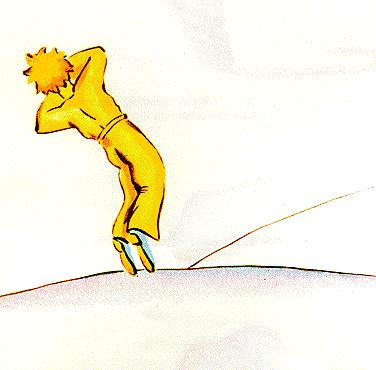
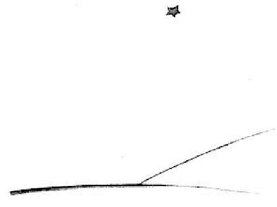

XXVII
Agus anois, ar ndóigh, tá sé sin sé blana ósshin cheana féin...Níor
inis mé an scéal sin riamh go dtí sin. Mo chomrádaithe, nuair a
chonaicsiad méarís,bhísiad brea sásta mé afheiceáilbeo.Bhíimé
go brónach ach deirinn leo: An tuirsc is cúis leis...
Tá beagán den chian imithe díom anois. Is é sin...níl iomlán
imithe. Ach tá a fhios agam go maith go bhfuil sé fillte ar an
phláinéad sin aige, óir, nuair a gheal an lá, ní raibh mé in ann
teachtar a chorp. Ní raibh sé róthrom, mar chorp...Agus le coim
na hoiche is maith liom éisteacht leis na réaltaí, Tá sé mar a
bheadh cúig chéad milliún cloigíní ann...
Ach ansin, féach, tharlarud asan ghnách. An mhantógalínigh
mé don phrionsa beag, rinne mé dearmad an iall leathair a chur
léi! Ní bheadh sé in ann í acheangal ar an chaora go deo. Marsin
bím agfiafraí díom féin... “Cad éatharlaaran phláinéadsinaige?
Tá seans maith gur ith an chaora an bláithín...”
Uaireanta deirim liom féin: “Cinnte, níor ith! Clúdaíonn an
prionsa beag a bhláithín gach oíche lena chlogad gloine, agus
coinníonn sé súil ghéar ar an chaora...” Ansin bím sona sásta.
Agus bíonn na réaltaí go léir ag gáire chugam go ciúin.
Uaireanta deirim liom féin: “Déanfaidh duine dearmad de
féin am amháin nó am eile, agus is leor sin! Rinne sé dearmad ar
an chlogad gloine tráthnóna éigin, sin nó d'éalaigh an chaora
amach i rith na hoíche gan tormán a dhéanamh...” Agus leis sin
níl i gcloigíní na spéire níos mó ach deora caointe .....
Nach mór go deo an rúndiamhair é! Dar libhse atá i ngean ar
an phriona beagfosta, agus dar liom féin, ní ionann do rud ar bith

sa chruinne má tá caora áit éigin, áit nach eol dúinn, caora nach
eol dúinn, caora atá i ndiaidh rós a ithe, b'fhéidir...
Amharcaigí ar an spéir. Fiaíraígí díobh féin...Arith an chaora
an bláidhin: Ar ith, nó an ea nar ith? Agus tífidh sibh mar a thig
athrú ar gach aon rud...
Agus níl duine fásta ar bith ann a thuigfeas go deo cad é chomh
tábhachtach agus atá sé sin!

Is é sin thuas dar liomsa, an dreach tíre is áille agus is brónaí ar
domhan. Is é an dreach tíre céanna agus atá ar an leathanach
roimhe, ach tá sé línithe uair amháin eile agam lena thaispeáint
go maith díbh. Is anseo a nocht an prionsa beag, agus is anseo a
cheiliúir sé.
Breathnaígí an dreach tíre seo go cúramach, le bheith cinnte
go n-aithneoidh sibh arís é, má bhíonn sibh ag taisteallá éigin san
Afraic, sa ghaineamhlach. Agus má tharlaíonn daoibh bheith an
bealach sin, impím oraibh, ná bíodh deifir oraibh, fanaigí tamall
díreach ansin faoin réalta! Ansin má thagann gasúr beag chugaibh,
má tásé ag gáire, má tá gruaig óirbhuí air, másé rud nach dtugann
sé Íreagra oraibh nuaira chuireann sibh ceistair, tuigfidh sibh go
maith cé atá agaibh. Agus, más é bhur dtoil é, ná fágaigí faoichian
mé: scríobhaigí chugam go tapa agus abraigí liom go bhfuil sé ar
ais...